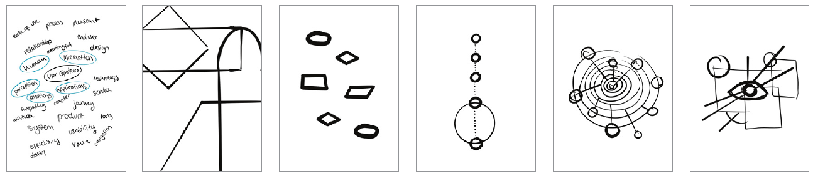
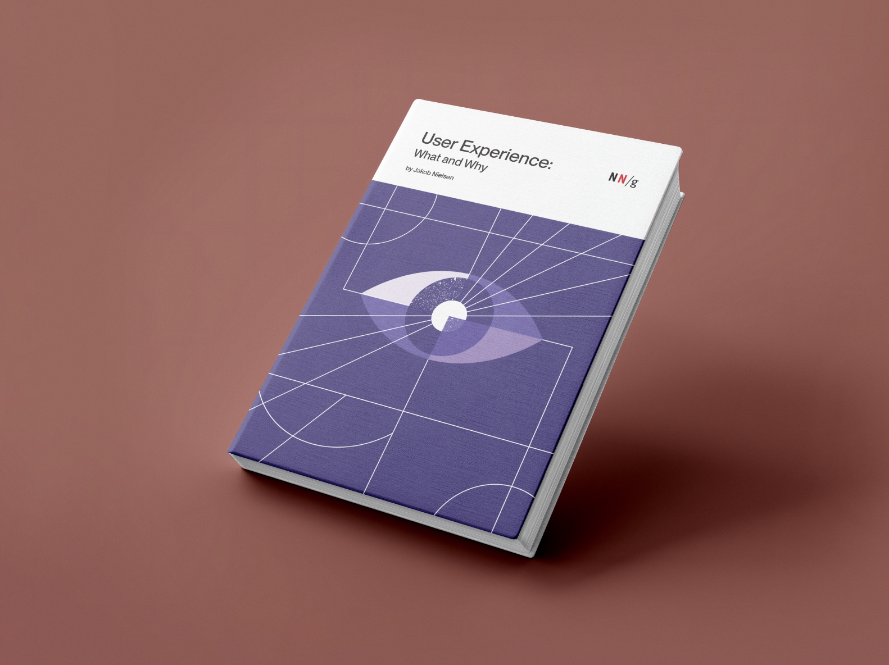
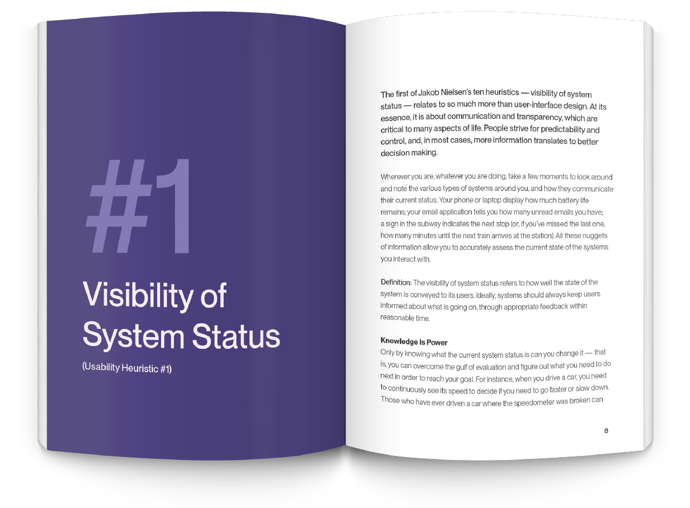

Campaign. Design. Postcards.
Questica Budget

UX. Frontend. Illustration.
Book Cover Design + Visual System (Design Thinking Process)
The objective was to develop something resonating with UX/UI Designers and Researchers, while remaining approachable for newcomers to the subject. Extensive research was conducted on various definitions and traits of User Experience, resulting in the creation of a keyword map. The chosen words were those deemed most relevant to the "What" and "Why" aspects of the topic, forming the basis for ideation. Initial concepts were sketched using Procreate on an iPad.
Exploration began by examining various shapes to represent different aspects of UX. From left to right I focused on user journey symbols, five stages of the UX design process, and the ten heuristics. While these ideas provided a good starting point, they felt too specific. The approach was then shifted to lean more into the concept of HCI (human-computer interaction), incorporating the eye to represent the human element.
Since this collection of books cover the topics of UX, Research and Design, I wanted to choose a colour system that would relate to those topics as a whole. I was immediately inspired by the Material Design Colour System. Each book cover could utilize a different palette that best connects to the corresponding book topic. Because these palettes were originally built for web and UI, I created a CMYK version as close as possible for print use. I specifically chose the indigo colour scheme to connect with the empathetic devotion that UX needs to create with the end user in order to be successful.
CMYK
This is the CMYK palette used in the artwork.
RGB
If web versions were an option for this use case, I would explore these values.
To remain cohesive with the simplicity of the visual system, the chosen typeface needed to be clean, modern and easy to read. Continuing with the theme of HCI, I thought to select a typeface that reminds the viewer of browsing through web or using computer applications. I chose to experiment with a modern Sans Serif named PP Neue Montreal for both headings and body copy. However, if I had more time for the project, I would opt for an alternative typeface for the body copy that is easier to consume for long-form printed publications.
The human eye serves as one of our primary motors for perceiving the world around us. This illustration invokes a pleasant emotion, which is experienced by an end-user when interacting with computer and web applications. The incorporation of layers and texture not only adds visual interest but also suggests the depth and immersion inherent in this interaction.
 The spread is clean, simple and modern, utilizing hierarchy and a single column layout. Cohesive section covers indicate new chapter breaks. These colours pull from the same indigo colour scheme used in the cover design.
Campaign. Design. Postcards.
UX. Frontend. Illustration.